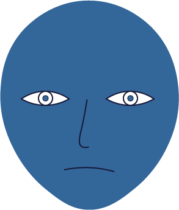
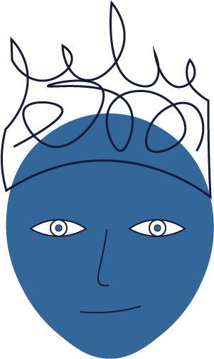
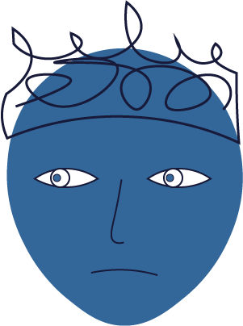
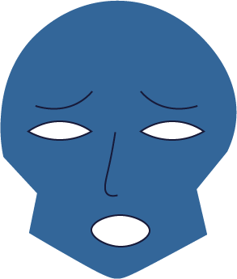
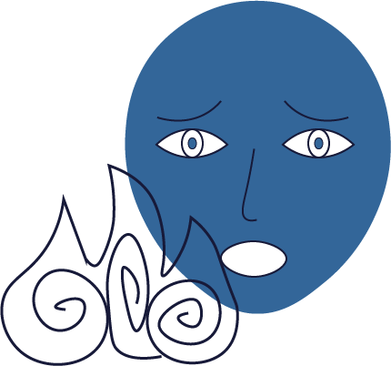

Karma
The human path is often regarded as the most desirable path, because it is the “middle way” between pleasure and suffering. As such, there is an appropriate balance of the two to want to gain understanding of the world’s situation. Humans have reason and free will, things which help attain enlightenment and implement Buddhist teachings into their lives (Keown 36-37).
While the path of gods might seem like the best one, since it involves peaceful and blissful existence following the accumulation of “good” karma, it isn’t considered better than the human path. Even those on the gods’ path are subject to karma and will eventually be reborn. As such, the path of the gods is only a temporary refuge and it is not a true escape from suffering. On the other hand, enlightenment is sometimes considered to be difficult to achieve in the realm of gods precisely because it is a blissful existence, and so it is easy to lose sight of the necessity to be enlightened (Keown 36-37).
The path of warriors (or “titans,” as they are sometimes called) is strongly defined through desire. They are described as demonic and motivated by their desire for power. They attempt to satisfy their desires through war and conquest, but find no fulfillment in it (Keown 36).
The path of hungry ghosts is one of the undesirable paths. They are disturbed spirits who can sometimes be seen by humans as shadows. They mostly come from former humans who in the course of their lives developed such attachment that they still cannot let go of them. They are consumed by desire, but they can never satisfy it, so their only fate while on this path is suffering. Hungry ghosts are often shown as creatures with small mouths and large stomachs, which symbolizes the large amounts of desire or hunger they can never fulfill (Keown 36).
Buddhist hells are places where beings are punished for the evil deeds they have done in previous lives and “bad” karma they have accumulated. They are subjected to many different punishments, including being boiled in oil and other creative ways of making them suffer. Buddhist hells are not permanent, though, as any path, they are a temporary state, from which a person is released once the “bad” karma has been atoned for (Keown 36).
Animal path is, perhaps, one of the more obvious ones. It is considered less desirable than rebirth as a human, because while animals still go through their lives suffering, they lack the capacity to fully understand the reality of their life or suffering. As such, they can do little to improve or be enlightened (Keown 36).
Sources
In a way, present life and past lives are nondual, meaning they are not the same, yet not entirely distinct from one another. Present life would not be possible without past lives: not only is it dependent on one’s essence being reborn, the circumstances of the present life are dependent on the karma accumulated in the past lives. At the same time, past lives would not matter if there were no present life. If one had been enlightened in one of the past lives, the past lives would not have an effect on one’s essence anymore. As such, past lives and present life are interdependent in a way that cannot remove one from the other.